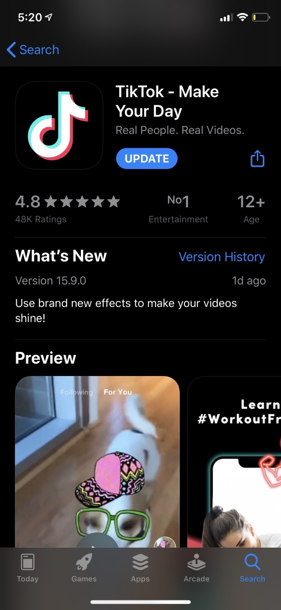

TikTok
Tiktok is a free social media app that allows you to watch, video and share videos to popular songs around the world. Your probably wondering how can this help with learning and teaching. These videos can also be use in an academic way allowing professionals to video content in a fun environment. TikTok is owned by the worlds most valued startup Bytedance,and is working with content creators and firms in creative India and around the world to populate the platform with educational videos. These short videos cover a range of topics from school-level science, maths and languages.
Tiktoc is fastly becoming one of the most used APPS on the app store. One of the main reasons is because of its analytics. A user may go onto instgram and recieve 4/5k views on their work,but on TikToc their work is reaching numbers by the millions.
Registration
You don't have to register for TikToc to use the app, although it is recommended that you do so that you fully enjoy the app as the videos you willsee will be tailored to your preference.
To register for TikToc,you must download the app from the App Store(for iphone/ipad)and the Play Store (for android).TikToc is also availabe as a website but you cannot create an account this way.
I will show you how to download and register for the TikToK iPhone app.
1. Locate the app on the app store and download it so it shows up pn your home screen.
2. Click on the sign up button and choose how you are going to create your account. I will be using e-mail.
.jpg)
3. Enter all the details that you are prompted for.
.jpg)
4. Start making your TikToks!
.jpg)
Cautions and Warnings
With any form of social media there are always downsides. Depending on the age catagory of the individual using any apps particulary the younger age it should be monitored so the app is being used for the approperiate reasons. TikToc is an app that can be used for reasons other than educational and therefore can pose a threat to the younger generation if they are influenced to part take in content not approperiate for their age.
Using TikTok for Learning
Using social media for education is a big thing today. Even things like moodle for college work would be fairly recent. There are other platforms such as Slack and Kahoot to also aid the learning process. Depending on the subject of learning, popular apps like Instagram and Twitter can also be used educationally. Using specific hashtags on these apps is a great way to keep up to date with work being done by the particular group. TikTok can also use hashtags to specify what videos are for teaching/learning. TikTok is a Chinese video sharing platform made in 2012. It was available globally in 2017. Since then, TikTok has developed many different uses, some of them involving teaching and learning. Before even thinking about anything academic, TikTok has been a place where you could learn something new. These include the popular video topic “life hacks”. This is where a user explains a trick to use in everyday life to make a certain task or chore a little more manageable. Other things you could learn from Tik Tok also include cooking, fitness tips, and even how to do the most popular dance trends. The most obvious example of TikTok being used for education however, is when the #EduTok programme was launched. This is a form of eLearning where users can post videos to teach others about various different topics, ranging from fitness workouts to solving mathematical equations. As of its launch, the genre of videos has received over 48 billion views on the app.